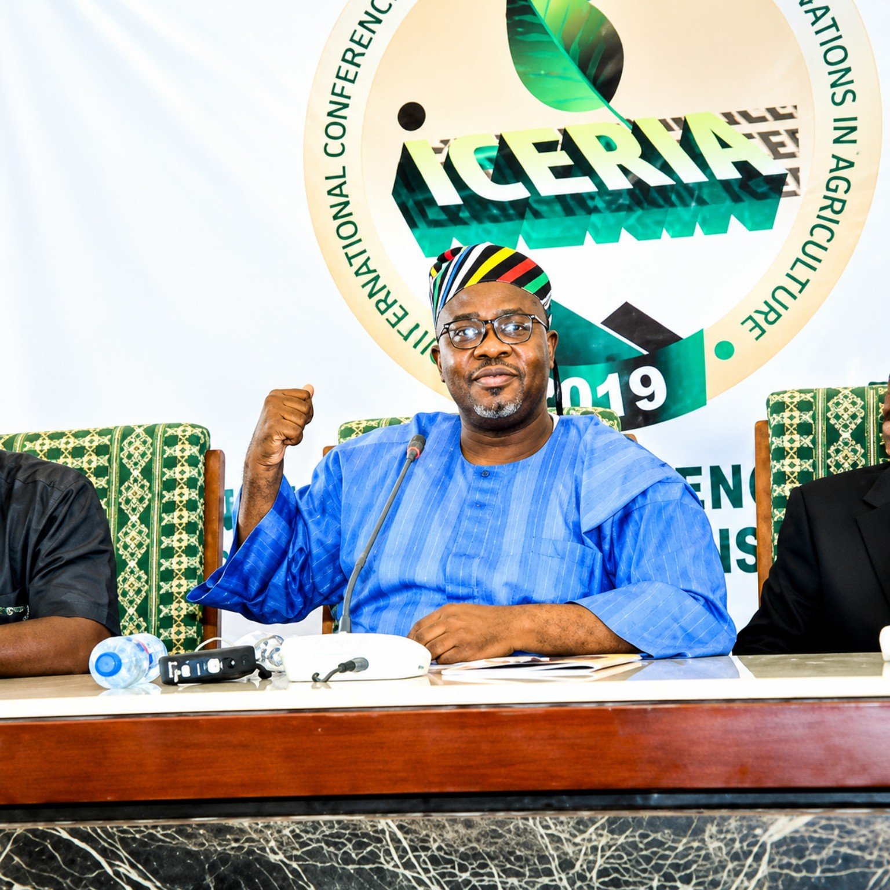

Mr. Taiwo Obe
Founder/Director, The Journalism Clinic. Chairman, ICERIA 2019.
ICERIA brings together researchers, practitioners, policy leaders, innovators, investors, development partners and enterprise voices.
These featured figures are part of the historical ICERIA record. They are not presented as confirmed ICERIA 2027 speakers.

Founder/Director, The Journalism Clinic. Chairman, ICERIA 2019.

Keynote Speaker, ICERIA 2019. Former President, International Fund for Agricultural Development (IFAD).

Regional Agricultural Counsellor for West Africa, Embassy of the Kingdom of the Netherlands (West Africa regional context including Ghana). ICERIA 2020 visual record.
Deputy Director General, Partnerships for Delivery, International Institute of Tropical Agriculture (IITA). ICERIA 2020 record.
The following names preserve the documented contributor record of the inaugural edition.
Moderator — Senior Special Assistant to the Governor of Osun State on African Financing and Investments.
Panelist — OFAB / biotechnology research and communication.
Panelist — Amicable Mondiale Farms.
Panelist — Nigerian Institute of International Affairs (NIIA).
Panelist — Finmba Investment Ltd.
Panelist — Agrorite Limited.
Panelist — Pinfarm Agro Services.
Speaker and Panelist — NIIA.
Speaker — Agricultural Policy Advisor, The Kingdom of the Netherlands in Nigeria.
Speaker — Nigerian Seed Portal.
Speaker — Institute of Agricultural Research Training, Obafemi Awolowo University, Ibadan.
Speaker — International Institute of Tropical Agriculture (IITA).
Special Guest & Panelist — Raw Materials Research and Development Council (RMRDC).
ICERIA 2027 speaker confirmations will be added as invitations and participation are formally confirmed.